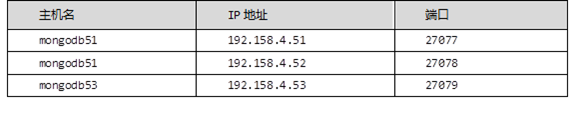

准备三台虚拟机，配置mongodb副本集，ip分别为192.158.4.51， 192.168.4.52，192.168.4.53其中一个是主节点，负责处理客户端请求，其余的都是从节点，负责复制主节点上的数据，实现存储数据副本，提高了数据的可用性，具体分配如表-1所示：
表-1
实现此案例需要按照如下步骤进行。
步骤一：创建mongodb副本集
1）三台主机安装mongodb（以4.51为例）
- [root@mongodb51 ~]# cd mongodb/
- [root@mongodb51 mongodb]# mkdir /usr/local/mongodb
- [root@mongodb51 mongodb]# cd /usr/local/mongodb
- [root@mongodb51 mongodb]# cp -r \
- /root/mongodb/mongodb-linux-x86_64-rhel70-3.6.3/bin/ .
- [root@mongodb51 mongodb]# ls
- bin
- [root@mongodb51 mongodb]# mkdir etc
- [root@mongodb51 mongodb]# mkdir log
- [root@mongodb51 mongodb]# mkdir -p data/db
- [root@mongodb51 mongodb]# vim etc/mongodb.conf
- dbpath=/usr/local/mongodb/data/db/
- logpath=/usr/local/mongodb/log/mongodb.log
- logappend=true
- fork=true
- bind_ip=192.168.4.51
- port=27077
- replSet=rs1
- //加入到副本集，rs1名字随便起，想知道谁和我在一个副本集里，三台机器的名字一样,都写rs1
2）设置PATH变量
- [root@mongodb51 mongodb]# vim /etc/profile
- export PATH=/usr/local/mongodb/bin:$PATH
- [root@mongodb51 mongodb]# source /etc/profile
3）由于启动和停止服务名字太长，可以起一个别名
给停止服务起一个别名
- [root@mongodb51 mongodb]# alias cmdb='mongod --dbpath=/usr/local/mongodb/data/db/ --shutdown'
给启动服务起一个别名
- [root@mongodb51 mongodb]# alias smdb='mongod -f /usr/local/mongodb/etc/mongodb.conf'
4）启动服务并连接
- [root@mongodb51 ~]# smdb
- about to fork child process, waiting until server is ready for connections.
- forked process: 5656
- child process started successfully, parent exiting
- [root@mongodb51 ~]# mongo --host 192.168.4.51 --port 27077
- MongoDB shell version v3.6.3
- connecting to: mongodb://192.168.4.51:27077/
- MongoDB server version: 3.6.3
- ...
- >
5）配置集群信息，任意一台都可以，在这里在51上面操作
- > rs1_config = { //rs1_config随便起变量名,要记住
- _id:"rs1", //必须为rs1这个，三台主机集群名，配置文件里面写的是这个
- members:[
- {_id:0,host:"192.168.4.51:27077"}, //_id值随意，host值固定
- {_id:1,host:"192.168.4.52:27078"},
- {_id:2,host:"192.168.4.53:27079"}
- ]
- }; //回车，出现下面情况为成功
- {
- "_id" : "rs1",
- "members" : [
- {
- "_id" : 0,
- "host" : "192.168.4.51:27077"
- },
- {
- "_id" : 1,
- "host" : "192.168.4.52:27078"
- },
- {
- "_id" : 2,
- "host" : "192.168.4.53:27079"
- }
- ]
- }
- >
6）初始化Replica Sets环境
- > rs.initiate(rs1_config)
- {
- "ok" : 1,
- "operationTime" : Timestamp(1538187475, 1),
- "$clusterTime" : {
- "clusterTime" : Timestamp(1538187475, 1),
- "signature" : {
- "hash" : BinData(0,"AAAAAAAAAAAAAAAAAAAAAAAAAAA="),
- "keyId" : NumberLong(0)
- }
- }
- }
- rs1:SECONDARY>
- rs1:PRIMARY> //提示PRIMARY，51为主
7）在52和53上面查看
- [root@mongodb52 ~]# mongo --host 192.168.4.52 --port 27078
- MongoDB shell version v3.6.3
- connecting to: mongodb://192.168.4.52:27078/
- MongoDB server version: 3.6.3
- ...
- ...
- rs1:SECONDARY> //提示SECONDARY，52为从
- rs1:SECONDARY>
- rs1:SECONDARY>
- [root@192 ~]# mongo --host 192.168.4.53 --port 27079
- MongoDB shell version v3.6.3
- connecting to: mongodb://192.168.4.53:27079/
- MongoDB server version: 3.6.3
- ...
- ...
- rs1:SECONDARY> //提示SECONDARY，53为从
- rs1:SECONDARY>
注意：如果初始化错误，重启服务登陆之后重新设置变量，之后再重新初始化
8）查看状态信息
- rs1:PRIMARY> rs.status()
- ...
- "members" : [
- {
- "_id" : 0,
- "name" : "192.168.4.51:27077",
- "health" : 1,
- "state" : 1,
- "stateStr" : "PRIMARY",
- "uptime" : 2295,
- ...
- ...
- },
- {
- "_id" : 1,
- "name" : "192.168.4.52:27078",
- "health" : 1,
- "state" : 2,
- "stateStr" : "SECONDARY",
- "uptime" : 384,
- ...
- ...
- },
- {
- "_id" : 2,
- "name" : "192.168.4.53:27079",
- "health" : 1,
- "state" : 2,
- "stateStr" : "SECONDARY",
- ...
- ...
9）查看是否是master库
- rs1:PRIMARY> rs .isMaster( )
- {
- "hosts" : [
- "192.168.4.51:27077",
- "192.168.4.52:27078",
- "192.168.4.53:27079"
- ],
- "setName" : "rs1",
- "setVersion" : 1,
- "ismaster" : true, //主库
- "secondary" : false,
- "primary" : "192.168.4.51:27077",
- "me" : "192.168.4.51:27077",
- ...
- ...
10）验证副本集，同步数据验证（51上面写数据）
- rs1:PRIMARY> use gamedb2
- switched to db gamedb2
- rs1:PRIMARY> db.a.save({name:"yaya",age:75,em:"p@.com"})
- WriteResult({ "nInserted" : 1 })
52上面查看
- [root@mongodb52 ~]# mongo --host 192.168.4.52 --port 27078
- rs1:SECONDARY> db.getMongo().setSlaveOk()
- rs1:SECONDARY> show dbs //有gamedb2库
- admin 0.000GB
- config 0.000GB
- ddsdb 0.000GB
- gamedb2 0.000GB
- local 0.000GB
- test 0.000GB
步骤三：切换主库验证
1）自动切换主库验证
关闭51
- [root@mongodb51 ~]# cmdb //之前设置的别名
- killing process with pid: 5656
查看52和53
- [root@mongodb52 ~]# mongo --host 192.168.4.52 --port 27078
- MongoDB shell version v3.6.3
- connecting to: mongodb://192.168.4.52:27078/
- MongoDB server version: 3.6.3
- ...
- ...
- rs1:PRIMARY> //52为主
- rs1:PRIMARY>
- [root@mongodb53 ~]# mongo --host 192.168.4.53 --port 27079
- MongoDB shell version v3.6.3
- connecting to: mongodb://192.168.4.53:27079/
- MongoDB server version: 3.6.3
- ...
- ...
- rs1:SECONDARY> //53为从
启动51，启动后不会再变为主，会成为52的从
- [root@mongodb51 ~]# smdb
- about to fork child process, waiting until server is ready for connections.
- forked process: 6598
- child process started successfully, parent exiting
- rs1:SECONDARY> rs.isMaster()
- {
- "hosts" : [
- "192.168.4.51:27077",
- "192.168.4.52:27078",
- "192.168.4.53:27079"
- ],
- "setName" : "rs1",
- "setVersion" : 1,
- "ismaster" : false,
- "secondary" : true,
- "primary" : "192.168.4.52:27078",
- "me" : "192.168.4.51:27077",
- ...
实现此案例需要按照如下步骤进行。
步骤一：管理文档
1）把系统用户信息/etc/passwd存储到mdb库下的user集合里
- rs1:PRIMARY> use mdb
- switched to db mdb
- rs1:PRIMARY> db.user.save({name:"yaya",password:"x",uid:9999,gid:9999,comment:"",homdir:"/home",shell:"/bin/bash"})
- WriteResult({ "nInserted" : 1 })
- rs1:PRIMARY> exit
- bye
- [root@mongodb52 ~]# mongoexport --host 192.168.4.52 --port 27078 -d mdb -c user -f name,password,uid,gid,comment,homdir,shell --type=csv -o /tmp/user.csv
- 2018-09-29T11:04:14.967+0800 connected to: 192.168.4.52:27078
- 2018-09-29T11:04:14.968+0800 exported 1 record
- [root@mongodb52 ~]# cp /etc/passwd /tmp
- [root@mongodb52 ~]# sed -i 's/:/,/g' /tmp/passwd
- [root@mongodb52 ~]# sed -i '$r /tmp/passwd' /tmp/user.csv
- [root@mongodb52 ~]# mongoimport --host 192.168.4.52 --port 27078 -d mdb -c user --headerline --type=csv /tmp/user.csv
- 2018-09-29T11:06:08.355+0800 connected to: 192.168.4.52:27078
- 2018-09-29T11:06:08.363+0800 imported 41 documents
2）查看
- [root@mongodb52 ~]# mongo --host 192.168.4.52 --port 27078
- rs1:PRIMARY> use mdb
- switched to db mdb
- rs1:PRIMARY> db.user.findOne()
- {
- "_id" : ObjectId("5baeeb37ce3cc5539aa21f38"),
- "name" : "yaya",
- "password" : "x",
- "uid" : 9999,
- "gid" : 9999,
- "comment" : "",
- "homdir" : "/home",
- "shell" : "/bin/bash"
- }
db.user.find（{条件},{定义显示的字段}） #指定查询条件并指定显示的字段
- rs1:PRIMARY> db.user.find()
- { "_id" : ObjectId("5baeeb37ce3cc5539aa21f38"), "name" : "yaya", "password" : "x", "uid" : 9999, "gid" : 9999, "comment" : "", "homdir" : "/home", "shell" : "/bin/bash" }
- ...
- Type "it" for more //出现这个按it，默认出现20行
查看每行的name字段
- rs1:PRIMARY> db.user.find({},{name:1})
- { "_id" : ObjectId("5baeeb37ce3cc5539aa21f38"), "name" : "yaya" }
- ...
- ...
- { "_id" : ObjectId("5baeec2001805180a1011843"), "name" : "rpc" }
- Type "it" for more
不看_id字段
- rs1:PRIMARY> db.user.find({},{_id:0})
- { "name" : "yaya", "password" : "x", "uid" : 9999, "gid" : 9999, "comment" : "", "homdir" : "/home", "shell" : "/bin/bash" }
- ...
- ...
- { "name" : "rpc", "password" : "x", "uid" : 32, "gid" : 32, "comment" : "Rpcbind Daemon", "homdir" : "/var/lib/rpcbind", "shell" : "/sbin/nologin" }
- Type "it" for more
不看_id那一列，看name那一列
- rs1:PRIMARY> db.user.find({},{_id:0,name:1})
- { "name" : "yaya" }
- ...
- ...
- { "name" : "rpc" }
- Type "it" for more
查看以a开头的name字段
- rs1:PRIMARY> db.user.find({name:/^a/},{_id:0})
- { "name" : "adm", "password" : "x", "uid" : 3, "gid" : 4, "comment" : "adm", "homdir" : "/var/adm", "shell" : "/sbin/nologin" }
- { "name" : "abrt", "password" : "x", "uid" : 173, "gid" : 173, "comment" : "", "homdir" : "/etc/abrt", "shell" : "/sbin/nologin" }
- { "name" : "avahi", "password" : "x", "uid" : 70, "gid" : 70, "comment" : "Avahi mDNS/DNS-SD Stack", "homdir" : "/var/run/avahi-daemon", "shell" : "/sbin/nologin" }
显示查询结果的前一行
limit 数字
- rs1:PRIMARY> db.user.find({name:/^a/},{_id:0}).limit (1)
- { "name" : "adm", "password" : "x", "uid" : 3, "gid" : 4, "comment" : "adm", "homdir" : "/var/adm", "shell" : "/sbin/nologin" }
显示name字段以a开头的第一行
- rs1:PRIMARY> db.user.findOne({name:/^a/},{_id:0,name:1,shell:1,uid:1})
- { "name" : "adm", "uid" : 3, "shell" : "/sbin/nologin" }
跳过几行显示 （2行）
skip 数字
- rs1:PRIMARY> db.user.find({name:/^a/},{_id:0,name:1,shell:1}).skip (2)
- { "name" : "avahi", "shell" : "/sbin/nologin" }
默认升序排序
sort 字段名
- rs1:PRIMARY> db.user.find({name:/^a/},{_id:0,name:1,shell:1,uid:1}).sort({uid:1})
- { "name" : "adm", "uid" : 3, "shell" : "/sbin/nologin" }
- { "name" : "avahi", "uid" : 70, "shell" : "/sbin/nologin" }
- { "name" : "abrt", "uid" : 173, "shell" : "/sbin/nologin" }
降序排序
- rs1:PRIMARY> db.user.find({name:/^a/},{_id:0,name:1,shell:1,uid:1}).sort({uid:-1})
- { "name" : "abrt", "uid" : 173, "shell" : "/sbin/nologin" }
- { "name" : "avahi", "uid" : 70, "shell" : "/sbin/nologin" }
- { "name" : "adm", "uid" : 3, "shell" : "/sbin/nologin" }
显示name字段以a开头和uid为3的所有行
- rs1:PRIMARY> db.user.find({name:/^a/,uid:3},{_id:0,name:1,shell:1,uid:1})
- { "name" : "adm", "uid" : 3, "shell" : "/sbin/nologin" }
3）条件判断的表示方式
$in 在...里
- rs1:PRIMARY> db.user.find({uid:{$in:[1,6,9]}}) //uid的为1或者6或者9的匹配
- { "_id" : ObjectId("5baeec2001805180a1011833"), "name" : "bin", "password" : "x", "uid" : 1, "gid" : 1, "comment" : "bin", "homdir" : "/bin", "shell" : "/sbin/nologin" }
- { "_id" : ObjectId("5baeec2001805180a1011838"), "name" : "shutdown", "password" : "x", "uid" : 6, "gid" : 0, "comment" : "shutdown", "homdir" : "/sbin", "shell" : "/sbin/shutdown" }
$nin 不在...里
- rs1:PRIMARY> db.user.find({uid:{$nin:[1,6,9]}},{_id:0,name:1,uid:1})
- { "name" : "yaya", "uid" : 9999 }
- ...
- ...
- { "name" : "saslauth", "uid" : 996 }
- Type "it" for more
$or 条件满足任意其中一个即可
- rs1:PRIMARY> db.user.find({$or:[{name:"root"},{uid:1}]},{_id:0,name:1,uid:1})
- { "name" : "root", "uid" : 0 }
- { "name" : "bin", "uid" : 1 }
4）正则匹配，以a开头的name字段
- rs1:PRIMARY> db.user.find({name:/^a/},{_id:0,name:1,uid:1})
- { "name" : "adm", "uid" : 3 }
- { "name" : "abrt", "uid" : 173 }
- { "name" : "avahi", "uid" : 70 }
5）数值比较
$lt(小于) $lte（小于等于） $gt（大于） $gte（大于等于） $ne（不等于）
- rs1:PRIMARY> db.user.find({uid:{$gte:10,$lte:40}},{_id:0,name:1,uid:1})
- { "name" : "operator", "uid" : 11 }
- { "name" : "games", "uid" : 12 }
- { "name" : "ftp", "uid" : 14 }
- { "name" : "rpc", "uid" : 32 }
- { "name" : "rpcuser", "uid" : 29 }
- { "name" : "ntp", "uid" : 38 }
匹配null：可以匹配没有的字段，也可以检查这个字段有没有
- rs1:PRIMARY> db.user.save({name:null,uid:null})
- WriteResult({ "nInserted" : 1 })
- rs1:PRIMARY> db.user.find({name:null})
- { "_id" : ObjectId("5baef385f9f3bf625ea1dbd6"), "name" : null, "uid" : null }
- rs1:PRIMARY> db.user.find({shell:null}) //表示此条文档没有shell字段
- { "_id" : ObjectId("5baef385f9f3bf625ea1dbd6"), "name" : null, "uid" : null }
- rs1:PRIMARY>
6）save和insert的区别
相同点：当集合不存在时创建集合，并插入记录
不同点：save() _id字段值已经存在时，修改文档字段值
insert() _id字段值已经存在时，放弃修改文档字段值
- rs1:PRIMARY> db.t1.save({name:"bob",age:19})
- WriteResult({ "nInserted" : 1 })
- rs1:PRIMARY> db.t1.insert({name:"bob",age:19})
- WriteResult({ "nInserted" : 1 })
- rs1:PRIMARY> db.t1.save({_id:7,name:"bob",age:19})
- WriteResult({ "nMatched" : 0, "nUpserted" : 1, "nModified" : 0, "_id" : 7 })
- rs1:PRIMARY> db.t1.find()
- ...
- ...
- { "_id" : 7, "name" : "bob", "age" : 19 }
- rs1:PRIMARY> db.t1.save({_id:7,name:"tom",age:19}) //把上一条的记录直接修改
- WriteResult({ "nMatched" : 1, "nUpserted" : 0, "nModified" : 1 })
- rs1:PRIMARY> db.t1.find()
- ...
- ...
- { "_id" : 7, "name" : "tom", "age" : 19 }
- rs1:PRIMARY>
- rs1:PRIMARY>
- rs1:PRIMARY> db.t1.insert({_id:8,name:"tom",age:19}) //可以存上
- WriteResult({ "nInserted" : 1 })
- rs1:PRIMARY> db.t1.insert({_id:8,name:"tom",age:19}) //存不上
- WriteResult({
- "nInserted" : 0,
- "writeError" : {
- "code" : 11000,
- "errmsg" : "E11000 duplicate key error collection: mdb.t1 index: _id_ dup key: { : 8.0 }"
- }
- })
7）插入多行文档
- rs1:PRIMARY> db.t1.insertMany([{name:"xiaojiu"},{name:"laoshi"}])
- {
- "acknowledged" : true,
- "insertedIds" : [
- ObjectId("5baef526f9f3bf625ea1dbd9"),
- ObjectId("5baef526f9f3bf625ea1dbda")
- ]
- }
- rs1:PRIMARY> db.t1.find()
- ...
- ...
- { "_id" : ObjectId("5baef526f9f3bf625ea1dbd9"), "name" : "xiaojiu" }
- { "_id" : ObjectId("5baef526f9f3bf625ea1dbda"), "name" : "laoshi" }
8）update修改
- rs1:PRIMARY> db.user.update({name:"root"},{password:"XXX"})
- //如果这一列不写完整，这一行除了password这一行，这一列的其他值都没有了相当于删除（要写完整）
- WriteResult({ "nMatched" : 1, "nUpserted" : 0, "nModified" : 1 })
- rs1:PRIMARY> db.t1.find({name:"root"})
- rs1:PRIMARY> db.user.find({name:"root"}) //没有东西，除了password:"XXX"
9）$set 条件匹配时，修改指定字段的值(局部修改)
- rs1:PRIMARY> db.user.update({name:"adm"},{$set:{password:"AAA"}})
- WriteResult({ "nMatched" : 1, "nUpserted" : 0, "nModified" : 1 })
- rs1:PRIMARY> db.user.find({name:"adm"}) //还存在
- { "_id" : ObjectId("5baeec2001805180a1011835"), "name" : "adm", "password" : "AAA", "uid" : 3, "gid" : 4, "comment" : "adm", "homdir" : "/var/adm", "shell" : "/sbin/nologin" }
- rs1:PRIMARY> db.user.update({name:/^r/},{$set:{password:"FFF"}})
- //默认修改匹配条件的第一行
- WriteResult({ "nMatched" : 1, "nUpserted" : 0, "nModified" : 1 })
- rs1:PRIMARY> db.user.update({name:/^a/},{$set:{password:"FFF"}},false,true)
- //改匹配到的所有
- WriteResult({ "nMatched" : 3, "nUpserted" : 0, "nModified" : 3 })
10）$unset 删除与条件匹配文档的字段
- rs1:PRIMARY> db.user.update({name:"sync"},{$unset:{password:1}})
- //删除password字段
- WriteResult({ "nMatched" : 1, "nUpserted" : 0, "nModified" : 1 })
11）数组
- rs1:PRIMARY> db.user.insert({name:"bob",like:["a","b","c","d","e","f",]})
- WriteResult({ "nInserted" : 1 })
$pop 删除数组末尾一个元素，1删除最后一个，-1删除第一个
- rs1:PRIMARY> db.user.update({name:"bob"},{$pop:{like:1}})
- //删除匹配的第一条的最后一个
- WriteResult({ "nMatched" : 1, "nUpserted" : 0, "nModified" : 1 })
- rs1:PRIMARY> db.user.update({name:"bob"},{$pop:{like:-1}})
- //删除匹配的第一条的第一个
- WriteResult({ "nMatched" : 1, "nUpserted" : 0, "nModified" : 1 })
$push 向数组中添加新元素
- rs1:PRIMARY> db.user.update({name:"bob"},{$push:{like:"Z"}}) //默认添加到最后
- WriteResult({ "nMatched" : 1, "nUpserted" : 0, "nModified" : 1 })
- rs1:PRIMARY> db.user.update({name:"bob"},{$push:{like:"W"}})
- WriteResult({ "nMatched" : 1, "nUpserted" : 0, "nModified" : 1 })
- rs1:PRIMARY> db.user.find({name:"bob"})
- { "_id" : ObjectId("5baef7b2034891a205de2959"), "name" : "bob", "like" : [ "b", "c", "d", "e", "Z", "W" ] }
$addToSet 避免重复添加
- rs1:PRIMARY> db.user.update({name:"bob"},{$addToSet:{like:"W"}})
- WriteResult({ "nMatched" : 1, "nUpserted" : 0, "nModified" : 0 })
- rs1:PRIMARY> db.user.find({name:"bob"})
- { "_id" : ObjectId("5baef7b2034891a205de2959"), "name" : "bob", "like" : [ "b", "c", "d", "e", "Z", "W" ] }
$pull 删除数组里的指定元素，若有两个bob可以用_id值定义把name:"bob"换成id值
- rs1:PRIMARY> db.user.update({name:"bob"},{$pull:{like:"c"}})
- WriteResult({ "nMatched" : 1, "nUpserted" : 0, "nModified" : 1 })
- rs1:PRIMARY> db.user.find({name:"bob"})
- { "_id" : ObjectId("5baef7b2034891a205de2959"), "name" : "bob", "like" : [ "b", "d", "e", "Z", "W" ] }
- rs1:PRIMARY> db.user.update({"_id":ObjectId("5afc1a717eff45e9cfc57ed3")},{$push:{like:"S"}})
- WriteResult({ "nMatched" : 0, "nUpserted" : 0, "nModified" : 0 })
- rs1:PRIMARY>
$inc 条件匹配时，字段值自加或自减
- rs1:PRIMARY> db.user.update({uid:{$lte:10}},{$inc:{uid:2}})
- //设置字段值自加2,默认改第一行
- WriteResult({ "nMatched" : 1, "nUpserted" : 0, "nModified" : 1 })
- rs1:PRIMARY> db.user.update({uid:{$lte:10}},{$inc:{uid:2}},false,true)
- //设置字段值自加2，false,true改全部
- WriteResult({ "nMatched" : 8, "nUpserted" : 0, "nModified" : 8 })
- rs1:PRIMARY>
- rs1:PRIMARY> db.user.update({uid:{$lte:10}},{$inc:{uid:-1}})
- //负数时是自减1，默认改第一行
- WriteResult({ "nMatched" : 1, "nUpserted" : 0, "nModified" : 1 })
12）删除文档
remove()与drop()的区别
remove()删除文档时不删除索引
drop()删除集合的时候同时删除索引
- rs1:PRIMARY> db.t1.remove({})
- WriteResult({ "nRemoved" : 6 })
- rs1:PRIMARY> db.user.remove({name:"/^a/"}) //删除以a开头的记录
- WriteResult({ "nRemoved" : 0 })
- rs1:PRIMARY> db.t1.drop() //删除集合t1
- true
- rs1:PRIMARY>